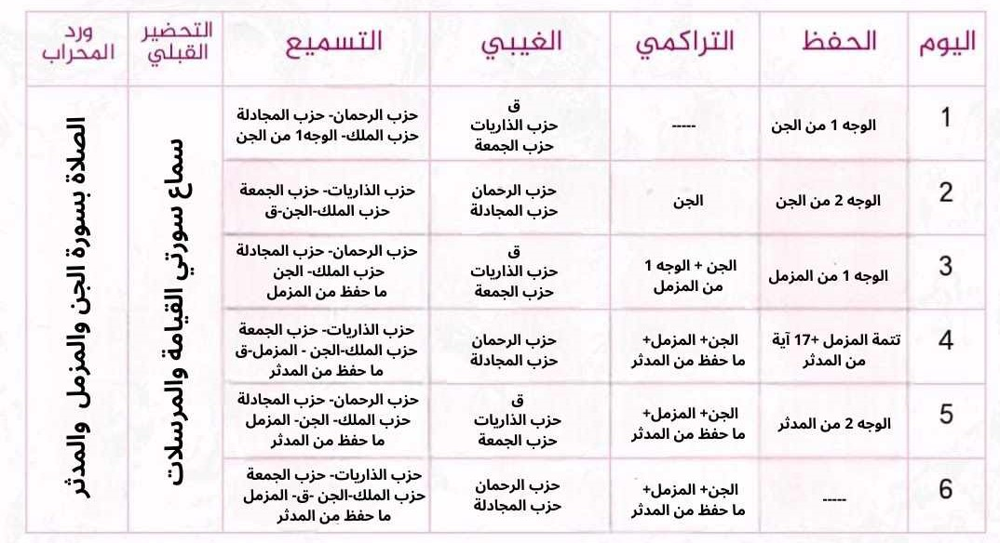

مولد تقرير يومي لبرنامج عطاء (موقع غير رسمي)
مولد تقرير يومي في برنامج عطاء
جدول الاسبوع

×
📖 اضغط هنا لاختيار الأحزاب والسور لتسميع
🌙 اختر الأحزاب والسور المراد تسميعها
تضمين ☂️ ورد الحفظ:
تضمين ☂️ ورد التراكمي:
☂️ ورد الحفظ
اسم السورة:
مدة التسجيل:
عدد التكرار:
عدد الأخطاء:
عدد الترددات:
☂️ ورد التراكمي
صفحات التراكمي:
مدة التسجيل:
التكرار:
عدد الأخطاء:
عدد الترددات:
☂️ ورد الغيبي
الأحزاب:
مدة التسجيل:
عدد الأخطاء:
-
+
اسم السورة :
عدد الترددات:
-
+
اسم السورة :
☂️ ورد التسميع
مدة التسميع:
تم التسميع :
السور
💎 المهام الأخرى
ورد الختمة الشهرية:
تم
لم يتم
التحضير القبلي:
تم
لم يتم
ورد التفسير:
تم
لم يتم
المتشابهات:
تم
لم يتم
ورد الأذكار:
تم
لم يتم
ورد المحراب:
تم
لم يتم
إنشاء التقرير ونسخه